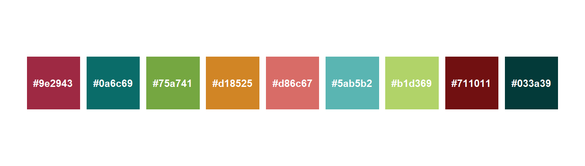

Gráficos para Revista Brasileira de Ciência do Solo
R
Solos
RBCS
ggplot2
Criando um snippet para o padrão gráfico da Revista Brasileira de Ciência do Solo
Autor
Gustavo Frosi
Data de Publicação
31 de agosto de 2025
Alguns padrões
A Revista Brasileira de Ciência do Solo preza por um padrão gráfico nos artigos publicados. Para isso, há um guia com todas as exigências que os autores devem atender para manter a identidade visual. Este texto é um guia de como realizar essas alterações utilizando gráficos e figuras desenvolvidos com a linguagem R.
A fonte
DejaVu é a família da fonte DejaVu Sans Condensed, a qual deve ser utilizada na criação das figuras. A família de fontes DejaVu está em domínio público, podendo ser baixada e até modificada por qualquer pessoa. Isso é uma vantagem, pois seu download pode ser feito de forma rápida e simples. Uma das alternativas é obtê-la no site fonts2u.
A Tabela 1 mostra o mesmo texto escrito com as fontes Arial e DejaVu, permitindo observar as principais diferenças entre elas.
Código
library(gt)texto <-data.frame(Arial ="A ciência do solo é o estudo do solo da Terra e de outros planetas, usando teorias e conhecimentos em evolução para entender seu papel na sustentação do funcionamento do ecossistema, enfrentando desafios ambientais e apoiando a humanidade.",DejaVu ="A ciência do solo é o estudo do solo da Terra e de outros planetas, usando teorias e conhecimentos em evolução para entender seu papel na sustentação do funcionamento do ecossistema, enfrentando desafios ambientais e apoiando a humanidade.")texto |>gt() |># tab_header(# # title = md("**Diferenças entre Arial e DejaVu**")# ) |> tab_source_note(source_note =md("Fonte: https://doi.org/10.1016/j.soisec.2025.100176") ) |>tab_style(style =cell_text(font ="Arial"),locations =cells_body(columns = Arial) ) |>tab_style(style =cell_text(font ="DejaVu Sans"),locations =cells_body(columns = DejaVu) )
Tabela 1: Comparação das fontes Arial e DejaVu
Arial
DejaVu
A ciência do solo é o estudo do solo da Terra e de outros planetas, usando teorias e conhecimentos em evolução para entender seu papel na sustentação do funcionamento do ecossistema, enfrentando desafios ambientais e apoiando a humanidade.
A ciência do solo é o estudo do solo da Terra e de outros planetas, usando teorias e conhecimentos em evolução para entender seu papel na sustentação do funcionamento do ecossistema, enfrentando desafios ambientais e apoiando a humanidade.
A RBCS possui uma paleta própria com 9 cores disponíveis para os gráficos. Na Figura 1 são apresentadas as cores e seus respectivos códigos hexadecimais.
Código
library(ggplot2)# vetor de corescores <-c("#9e2943","#0a6c69","#75a741","#d18525","#d86c67","#5ab5b2","#b1d369","#711011","#033a39")# cria um data frame com posição e coresdf <-data.frame(x =seq_along(cores),y =1,cor = cores)# plota quadradosggplot(df, aes(x = x, y = y, fill = cor)) +geom_tile(color ="white", width =0.9, height =0.9) +geom_text(aes(label = cores), col ="white", size =3, fontface ="bold") +scale_fill_identity() +coord_fixed() +theme_void()

Figura 1: Paleta de cores da RBCS
Reproduzindo o padrão RBCS no R
Para implementar essas configurações, serão utilizados os seguintes pacotes do R:
A seguir, apresento um exemplo de como tudo isso pode ser adicionado de forma simples aos gráficos.
Para ilustrar, criei dados fictícios de um experimento comum de dose e resposta. Neste exemplo, considero 9 tratamentos, com 10 repetições, 5 doses e uma variável chamada resposta. Os valores não possuem significado real, servindo apenas como exemplo.
Visualização
Para aplicar a fonte a todo o texto do gráfico, basta definir o nome da fonte na configuração de temas do {ggplot2}.
theme_minimal(base_family ="Dejavu Sans")
Caso, o tema utilizado seja o “base”, utilize:
theme(text =element_text(family ="Dejavu Sans"))
Já as cores podem ser adicionadas por meio de uma escala manual, passando o vetor como parâmetro de values na função scale_color_manual().
Além disso, a RBCS solicita que os gráficos sejam enviados em formato vetorial, como SVG. Para salvar um gráfico do {ggplot2} nesse formato, basta utilizar a função ggsave().
ggsave(filename ="fig_ex.svg", width =10, height =8, units ="cm", dpi =950)
Abaixo, reúno os dados apresentados em três gráficos distintos, já utilizando as configurações da RBCS.
Código
# ponto com barra de errop1 <-ggplot(df) +aes(x = tratamento, y = resposta, col =as.factor(dose)) +stat_summary(geom ="errorbar",position =position_dodge(.5) ) +stat_summary(geom ="point",position =position_dodge(.5),size =2 ) +scale_color_manual(values = cores) +labs(x ="Tratamento",y ="Resposta",col ="Dose",title ="Gráfico de pontos de exemplo" ) +theme_bw(base_size =10, base_family ="Dejavu Sans")# colunasp2 <-ggplot(df) +aes(x = dose, y = resposta, fill =as.factor(tratamento)) +stat_summary(geom ="col",position =position_dodge() ) +scale_fill_manual(values = cores) +labs(x ="Dose",y ="Resposta",fill ="Tratamento",title ="Gráfico de barras de exemplo" ) +theme_bw(base_size =10, base_family ="Dejavu Sans")# linhasp3 <-ggplot(df) +aes(x = dose, y = resposta, col =as.factor(tratamento)) +stat_summary(geom ="line", linewidth =1) +scale_color_manual(values = cores) +labs(x ="Dose",y ="Resposta",col ="Tratamento",title ="Gráfico de linhas de exemplo" ) +theme_bw(base_size =10, base_family ="Dejavu Sans")pt1 <- (p1 | p2) +plot_layout(widths =c(.55, .45))ptt <- pt1 / p3# ggsave(filename = "exemplo_gra.png",# width = 10,# height = 8,# dpi = 1200)
Criando um snippet
Os snippets são blocos de código que podem ser chamados rapidamente no corpo do script, utilizando palavras-chave. Exemplos são if, for e fun. Ao digitar essas palavras no RStudio, o autocomplete sugere o snippet que insere automaticamente a estrutura completa da função, otimizando o tempo.
Exemplo de uso de snippet
Snippet rbcs
O vídeo abaixo mostra o processo de criação de um snippet baseado no código acima, como chamá-lo no script e, assim, automatizar as configurações de gráficos para a RBCS.
Exemplo de snippet RBCS
Agora, sempre que for necessário formatar gráficos de acordo com o padrão da RBCS, basta escrever rbcs e pressionar enter no RStudio: as configurações básicas já serão inseridas no código.